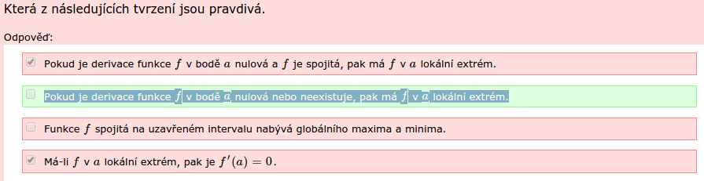

Derivace lokální extrém
asked 2014-12-05 18:59:17 +0100

V E-learningu jsem zaškrtl, že toto tvrzení je pravdivé :
"Pokud je derivace funkce f v bodě a nulová a f je spojitá, pak má f v a lokální extrém."
E-learningový test to vyhodnotil jako chybu, tak se ptám, proč ?
Pod tím bylo správné řešení toto: "Pokud je derivace funkce f v bodě a nulová nebo neexistuje, pak má f v a lokální extrém." Jelikož lze zaškrtávat více odpovědí jako správné, tak se ptám, proč je správně pouze tato varianta ?
Přikládám obrázek, pokud by to bylo z popisu nejasné. 

Není to náhodou tak, že druhá odpověď je zelená, protože je správně neoznačená? Tím pádem je špatně, že není zaškrtnutá třetí odpověď a ta je ta správná?
hansk ( 2014-12-05 19:31:10 +0100 )editJe to tak, ty barvy jsou fakt matoucí.
shejby ( 2014-12-06 02:00:34 +0100 )edit